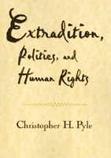

A compelling history of U.S. extradition
A compelling history of U.S. extradition


 A compelling history of U.S. extradition
A compelling history of U.S. extradition

|  |
Extradition, Politics, and Human RightsChristopher H. Pylepaper EAN: 978-1-56639-823-7 (ISBN: 1-56639-823-1) |
Outstanding Academic Title, Choice, 2002
"...if Pyle's topic is obscure, his fire-in-the-belly rpresentation is by no means dry. And to the extent that his well-researched brief reveals an emerging double standard between the protections afforded to those who are citizens and those who are not, his message is of keen interest to one of the fastest-growing segments of the U.S. population."
—National Journal
Three hundred years ago, few people cared about the murky past of new arrivals to the United States, and the countries they had left made few efforts to pursue them to their new home. Today with the growth of bureaucracy, telecommunications, and air travel, extradition has become a full-time business. But the public's knowledge of, and consequent concern about, extradition remains minimal, aroused from time to time by newspaper headlines, only to fade.
In this readable and compelling history of extradition in America, Christopher Pyle remedies that ignorance. Using American constitutional law and drawing on a wealth of historical cases, he describes the collision of law and politics that occurs when a foreign country demands the surrender of individuals held to be terrorists by some and freedom fighters by others. He shows how U.S. policymakers have attempted to substitute deportation for extradition, and turn the surrender of a foreign national (or even an American citizen) into a political rather than a judicial process.
Beginning with the New England Puritans' refusal to surrender to the "regicides" who had signed the death warrant of King Charles I, he traces the attitudes and ideologies that have shaped American extradition practice, culminating in the efforts by the Reagan and Bush administrations to turn the legal extradition process into an executive tool of state policy. Along the way we meet such legal luminaries as James Madison and John Stuart Mill, William Rehnquist and Oliver North, as well as pirates and fugitive slaves, anarchists and refugees, drug lords and runaway sailors.
Woven throughout this story is the author's belief that current developments in extradition law ignore or actually violate the principles of individual liberty, due process, and humanity on which we claim our country was built. As he remarks in the Introduction, "Extradition involves the surrender of human beings—persons under the protection of our Constitution—to foreign regimes, many of which are unjust. This reality was well understood in the eighteenth and nineteenth centuries, when the United States was a refuge for the victims of European oppression, but it has been disregarded frequently in the twentieth century as we have sought to stem the tide of immigration and develop advantageous economic and political relations with autocratic regimes of every stripe."
Excerpt available at www.temple.edu/tempress
"The book is well written, and dry materials are made both relevant and interesting. Readers interested in public policy generally or foreign policy specifically would be very interested in this volume as another representation of public policy in action. For human rights activists, the questions raised are troubling and give pause in considerations of America's commitment to such rights."
—Perspectives on Political Science
"Pyle's most important contribution to scholarship is his final chapter, 'Rethinking Extradition,' in which he proposes logical legislative changes that would accord an extraditable accused the same rights as ordinary criminals, would allow the courts to receive exculpatory evidence from the accused, and would allow judges to inquire into the treatment an extradited person is likely to face once returned to the requesting country. Given the fact that the individual is not likely to receive bail in the receiving jurisdiction, let alone a fair trial, procedural fairness in American courts is surely not too much to ask."
—Law & Politics Book Review
Read a review from IMR, Volume 36.1 (Spring 2002), written by Joan Fitzpatrick (pdf).
Read a review from the New York Law Journal, 23 November 2001, written by Bradford Trebach (pdf).
Preface and Acknowledgments
Introduction
1. A Nation of Asylum
2. The Extradition of Thomas Nash
3. The Martyrdom of Jonathan Robbins
4. Extradition and Slavery
5. First Principles
6. Offenses of a Political Character
7. Judicial Primacy
8. The Uprising Test and Illiberal Revolts
9. Noninquiry
10. Cold War Justice
11. Police Wars
12. Exempting Terrorists
13. Urban Guerrillas Versus Army Death Squads
14. Hijacking to Freedom: Extradite or Punish?
15. Gutting the Political Offense Exception
16. Deportation to Achieve Extradition
17. Retributive Justice and the Second Artukovic Case
18. Extradition as a Substitute for Deportation: Getting Ivan
19. Ivan Who? Getting the Wrong Man
20. The Law of Stolen People I
21. The Law of Stolen People II
22. Rethinking Extradition
Appendix
Notes
Index
Christopher H. Pyle is Professor of Politics at Mount Holyoke College. He is the author of several books and Congressional reports and has frequently testified before Congress on the subject of extradition and deportation.
Law and Criminology
Political Science and Public Policy
© 2015 Temple University. All Rights Reserved. This page: http://www.temple.edu/tempress/titles/1558_reg.html.